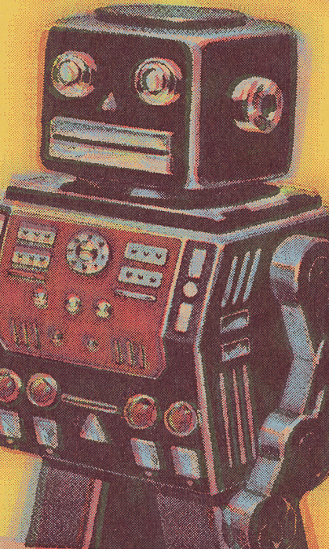

Let's Learn About Permanent Press 2
Welcome
Welcome to Permanent Press 2! Now you can create professional quality vintage offset, letterpress and silkscreen printing effects on any image in Adobe Photoshop and compatibles. This manual explains how to install and get the most out of your new software and provides an overview of all Permanent Press 2 features.
Introduction
Back in 1940, if a company wanted to print a book of matches, a poster or playbill, or run a full-color advertisement in a major publication, they needed to use the services of a qualified printer and lithographer.
The job of the lithographer would be to take the original artwork, mechanical layouts and photographs and convert them so they could be reproduced in any number of offset printing processes. Once their work was completed, it was up to the printer to select the appropriate ink and stock to run the job.
While these skilled laborers were working with the state-of-the-art equipment in 1940, the state-of-the-art was far less sophisticated than we are used to in present day. Even in the most competent hands, printing and lithography equipment lacked precision and often times created less than desirable results.
As time went on and printing processes and equipment improved, we're now able to reproduce printed items that look exactly as we intend them to. While this we delight in as the miracle of technology, we have also lost the charm of printing's earlier years.
Gone are the days of plate offset, over-inking, mis-registration, and a host of other resulting conditions sure to cause printers hair to prematurely fall out. Many times these artifacts presented to designers as happy accidents were only realized after the job was run.
That is until now . . . .
Let's Get Started!
Realizing that printing technology has left printed work sterile and without the texture, soul, or the spirit of vintage printing, Mister Retro created Permanent Press 2!
Take any design, photograph, type treatment or image and transport it to another time and aesthetic with our powerful and easy-to-use plug-in GUI interface. We spent thousands of hours developing this one of a kind plug-in sure to bring your work to the next level.
This manual will give you all the tools you need to understand how Permanent Press 2 works, so let's get started!
If you haven't yet installed and activated Permanent Press 2, click here!
If you've already installed Permanent Press 2 and are ready to get going, click here to get familiar with the User Interface.